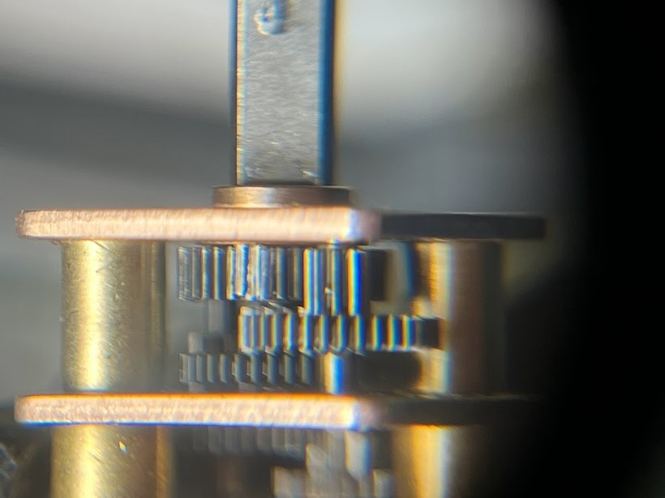
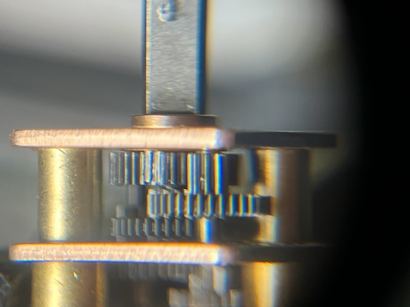

Projects
Throw Bot
Throw Bot
A hyper optimized robot built to win

My second term of junior year had what was probably my favorite course thus far, MTE 380. Why is that? Because of how open ended and challenging it was. I’ve written about this before on my blog - but I think courses should strive to be more like this one. The rundown of the syllabus was teams of 3 - 6 will compete to complete a robotics challenge that will be announced in the second week. Your mark of the course is highly dependent on your competition score, which is calculated as:
Essentially the field is two 8ft x 8ft areas separated by a 3ft tall wall. The goal is to start on one side, and navigate towards a red pole on the other side of the field, requiring some method of crossing the wall. Part of the wall is made out of steel sheet metal, encouraging some sort of magnetic solution. Another part of the wall has a ramp up and down. It's worth noting that controlled flight is not allowed, and that you are allowed to leave behind parts as you go.
Off the bat, our team noticed that it’s obvious that the priority of optimization should be:
1. Reduce time to complete
2. Reduce mass
And that there is a tradeoff in score you can calculate between the two, since they are related by square law. For example, if some upgrade doubles the mass, but saves ⅓ of the time to complete the course this is justified because:
We used this calculation throughout our design process to ensure we remained competitive compared to other strategies. If we found that it was possible to get a higher score by making a weight vs. time decision, we used this to make that decision. So lets talk about some other strategies.
As I normally encourage in open-ended design projects, each member of the team independently brainstormed ideas with no bias, then did research to inform their ideas more, and finally presented their ideas. The three main categories of ideas were driving up the ramp, climbing the steel wall, or launching over the wall - as expected. Sketching out rough concepts for each of these methods allowed us to do a rough score calculation, a look at that below:
As can be found by this analysis, jumping over the wall is pretty likely to give the best score. That being said, it relies on many assumptions. There may be faster ways to do any of these, and there might be lighter ways as well, but initial signaling told us to pursue launching over the wall.
I want to talk about perception and sensing before the rest of the robot, since we made a decision that fundamentally altered the entire robot design. A big problem with the launching design was not knowing where you were going to land, meaning that the search space for the pole is probabilistically larger than the other two methods (where you roughly know where your robot is in the field, and can more easily go to some location to start your pole search). To counter this, we looked at long distance range sensors that could see the full field. I’m a big fan of the VL TOF series from STM, and they had a new offering available that claimed to do up to 4m ranging with a 8x8 depth grid (VL53L5CX). What we didn’t see early on, and what came back to bite us, was that it can only do 4m of ranging without a depth grid and in very specific lighting (realistically it was closer to 1m). A big downside was the sensor's firmware was so large it needed to be uploaded on boot over I2C from memory big enough to fit it, ruling out most Arduino Atmel based microcontrollers altogether.
But by far the biggest challenge with the launching design was how to make the robot survive on impact. To do this, we need to optimize the following equation to reduce force inflicted on the robot upon landing.
To reduce force, the impact time needs to be maximized, the mass needs to be reduced, and the impact velocity needs to be reduced. To increase impact time, we can look at the equation for the period of a spring which is based on spring stiffness and mass (assuming the crush structure acts like a spring). These are all knobs we control!
As you may have noticed, we now have even more incentive to make the robot light! We get points through the competition, and it reduces impact on the robot - a win win. This reduces the optimization problem and lets us hyper focus on making it as lightweight as possible.

Making stuff extremely light is quite a fun challenge, you can get into all kinds of cool materials and structural methods of saving weight. During the Throw Bot design, we prosecuted every gram added, and in the end, almost every part of the robot was pushed to the limit in terms of weight. For starters, I knew the heaviest components would be the motors and the batteries. It's clear from first principles that if you want a robot that can move linearly and rotationally independently you need two separate motors. Electric motors can have good power to weight ratios, but most of that power is useless because of how low torque they are. Therefore, I was looking for small motors with big reduction gearboxes. I had used these N20 motors during my internship at Matician and on Kurt (another project of mine), and they seemed perfect for this project. Using a calculator that considers drive speed, torque for accelerating, and torque for climbing onto the platform the pole is on, the optimal gear ratio can be found. In our case, that was 100:1 - but we also tested with 50:1 and 210:1. Later, a 2S battery is selected, which significantly over-volts the motor (8.4V/6V) but gives us performance gains at the cost of a potential burn out if it draws too much current.
The next challenge was finding a battery, and in parallel with this determining the smallest battery possible for our power budget. To do this I worked with Ethan, our electrical lead to cut down as much power usage as possible before selecting components for the PCB. This included using a super low power microcontroller (Artemis), having the power LED be activated by a switch, running sensors in low power mode, and switching from a linear regulator to a custom buck converter. In the end, for the battery to last for five 5 minute runs, around 160mAh would be needed. At that low of an energy usage, it wasn’t the capacity that limited us, but instead the discharge rate. Since current could be up to 1.2A, and most discharge ratings of LiPo packs are 1C, we would need a 1200mAh battery.
It's very difficult to get batteries in Canada, a lot of suppliers like Digikey have a tiny selection in Canada, and other vendors don’t want to deal with the shipping at all. By some completely random miracle we found out that disposable vapes use rechargeable Li-Ion batteries, and they have very high discharge rates (up to 10C!). Sadly we couldn’t find a cell smaller than the 13300 (1S 400mAh) but this is still acceptable as it's only 8 grams and fairly easy to package.
To make the structure as light as possible, we made the risky decision of using the main PCB as a structural member, sandwiching the motors and sensors between it and an identically sized dummy PCB. PCBs are manufactured out of FR4, or glass fiber, and are surprisingly stiff. We tested this idea by drop testing an old Raspberry Pi strapped to a 150g weight onto concrete from roughly the same height as the robot - none of the components broke off or were electrically damaged, and it still booted. The motors are clamped between the two PCBs, centered for rotational symmetry. The TOF is soldered at a 90 degree angle, facing forwards but braced by both PCBs. Both motors have integrated encoders that slot downwards through holes in the bottom board. Finally, the batteries are positioned at the back of the electronics sandwich, where they are as safe as possible from impact because of a tail that protrudes out of the back. There is almost no space left in the completed robot, things are packaged together as tightly as possible without sacrificing DFA or repairability.
The gearbox output shaft is only supported by two tiny plain bearings, and from reliability testing at a previous internship I've seen first hand how they slowly wear down into slots, destroying the gears in the process. To reduce this, the motors are pressed into a custom machined bearing block made out of 7075 aluminum. The fit is tight, and even though the shaft is only supported by the one ball bearing, when loaded right it can take a majority of the force. In an attempt to do just that, the wheels are curved inwards such that the contact patch is inline with the bearing - this however does not help as much when the robot hits the ground at an angle. Many people thought it was strange I used aluminum for this part instead of plastic since we were so focused on reducing weight. Well in a prototype made for drop testing this part was plastic - and it was the first point of failure. In addition, having a proper reamed hole for a bearing press fit is also important for bearing life. On top of this if you think about the motor mount as a spring in parallel with the brass gearbox plate, in order for the bearing to take a significant portion of the load the motor mount needs to have a high relative stiffness compared to the gearbox plate. Brass is very stiff, around 40% stiffer than 6061 and 30% stiffer than 7075. There are more complexities to this argument including the tolerance stackup of all these parts, but it’s beyond the scope of this post.
The next part to be designed was the wheel and in turn the wheel hub. The wheel hub is another tiny machined piece of aluminum that interfaces with the gearbox D shaft, and locks onto the wheels with two keyed cuts. Two tapped holes accept set screws that reduce the hertzian contact stresses significantly compared to a typical single set screw design.
Wheel design was fundamental to the success of the project, as noted earlier, increasing the time of impact is crucial to a safe landing. To do this a wheel needs to be designed such that it can crumple with just the right energy. If it crumples too little, energy instead gets absorbed by the other parts in series with the wheel - too much and the robot body or batteries hit the ground. And as you increase the wheel size, the weight goes up with the radius squared - it's worth noting that the wheels ended up being the heaviest single component on the robot. The easiest material available to prototype fast was TPU which could be printed on my FDM printer, although foam and casting options were discussed.
In order to test some of the crazy wheel ideas I had, I needed a way to measure the impact. To do this, I made a mass dummy that had a similar mass and COG to the revision of the robot at the time. I rigidly secured an IMU on the mass dummy to log impacts so that I could quantitatively measure the performance of various wheels. Near the end of the project I had a perfect replica of the robot with no electronics, but identical mass, COG, and moments of inertia. An example drop with a super early version of the wheels is shown below with the acceleration plot below it.

I figured this problem has probably been solved before, so did a bunch of research on crush structures, shock absorbing wheels, and rugged robots. I found a company called Recon Robotics that actually makes a robot called ThrowBot (we came up with our name and rough design before finding the company funnily enough) and there were some pretty good pictures of the wheels (left) that I could copy and test. There was also a cool wheel design (right) on the Boston Dynamics Flea robot from 2012, I feel like it doesn’t get enough credit - it's super cool!
I made 6 different iterations of the Recon Robotics wheel design but found inconsistent results, none of which were particularly good. The drop test shown earlier was the first iteration of these wheels. The wheel has straight radial spokes which crush in unpredictable ways, meaning depending on how it lands the stiffness can change. After testing one iteration of the Boston Dynamics wheel it was clear that I wouldn’t be able to make it flexible enough with the filament I had available.
So I decided to try and beat both of these results. Obviously this is a different use case and manufacturing method for these wheels, and I never expected the other designs to be optimal. One thing that was obvious to me was that the stiffness should be radially consistent, meaning no matter where you land on the wheel it shouldn’t change too much. Also, the spokes should crumple in a repeatable and controlled way. The design that comes to mind is sort of like leaf spring suspension, patterned radially. By pre-buckling the spokes, they compress in a predictable way. I played around with curvature, spoke count, and thickness over 8 different iterations to hone in a stiffness I was happy with.
I already talked about how the wheels curve inwards such that the contact point is inline with the bearings, but let's talk about the rest of the front profile. Originally I had curved the outside of the wheel so that if the robot landed on the side of the wheel, it would tip over automatically. In practice though, there was nothing to absorb shock for a side impact. To solve this, I curved the spokes back outwards into a spike reminiscent of a Roman Chariot. The spike was constrained to a certain shape to ensure the COG of the robot was always outside of the support polygon formed by the wheel and the spike. It also had to be designed such that its stiffness was similar to the wheels. This took 3 iterations to get right, with the final design only using every other spoke in the spike (which can be seen upon close inspection of the picture below).
The tail was another critical part, and was exposed to impact by definition of its functionality. To react the torque from driving, and allow the robot to move around without just spinning out, something needs to hold the body relative to the floor. Since it needs to protrude from the safety zone the wheels provide, it also needs to be a crush structure. I went through 4 iterations of tail design, the first being curved to keep the robot body level, and then after ditching that design it ended up being straight - accepting that the robot would be at a 30 deg angle in either orientation depending on landing. Having an ambidextrous robot also means you don’t need space and time to flip the robot over if it's upside down - you can just start searching as soon as you land. The design of the crush structure was a bunch of tapered hexagonal crush structures that could both bend and buckle depending on impact. At the end of the tail is a PLA ball that reduces friction on the ground and allows the tail to be shorter, reducing mass.
Finally, the enclosure was designed to keep everything safe from impact. Depending on impact direction and velocity, the wheels could actually crush enough to hit the body. The worst impact would be landing on the finish pole, hitting the wall, or really anything that can fit between the wheels. If this happened, I wanted a lightweight enclosure to absorb the energy instead of say an SMD capacitor. Most of the enclosure is 2 or 3 nozzle diameter widths thick, and is quite weak. It was made to be as light as possible, and was sacrificial, being replaced multiple times during testing. The enclosure also has guides that keep it retained in the launcher, which look like 4 semi circular profiles on the top and bottom.
The final robot weight was 120 grams, much lighter than the 250 gram prediction made when selecting designs.
Originally the launcher design was the responsibility of another member of my group, but he only got a prototype done before running out of time. This left around 6 days to go from the prototype which weighed ~800g to something that was more competitive, with a goal of <300g. The prototype was constructed with pretty chunky aluminum extrusion that weighed a ton, as well as not being very stiff in bending and having a pretty tippy base. That being said, it did help us validate our projectile motion math and figure out parameters like energy efficiency and landing variability.
An obvious place to start is cutting out the extrusion with something much lighter - ideally something that is straight, smooth, can withstand buckling loads and tensile shock loads. The obvious material here is carbon fiber, it's insanely strong in tension to handle the shock loading, and stiff enough to withstand buckling under the springs, carbon tubes are also manufactured on mandrels keeping them very straight. Mounting to carbon fiber is a bit trickier without breaking out expensive resins, so I resorted to clamping and using hoop stress to not crush the tubes (similar to cinematic camera equipment) as well as JB weld, which was shockingly resilient.
I wish I could’ve found a lighter solution to the springs, but with such limited time I wanted to stick as close to the prototype as possible. The springs are held captive, and are twisted slightly to encourage them to buckle when they’re crashed into the end stop. Reducing the shock loading when the springs crash was pretty important, the part at the end shown above is stripped down for weight and is only epoxied into the tube.
The release mechanism was developed by my group member who made the launcher prototype. Its tapered shape allows it to take almost zero force to pull out, ideally the angle of the taper is at the slip angle (inverse tan of the coefficient of friction) but since friction is unknown it had to be guessed. A servo motor horn pulls the pin up 3 seconds after the launcher is turned on, but due to a last minute rule change we were allowed to do a manual release. That saved us all the weight of a servo, battery, arduino, and boost converter - but made the project less cool in my opinion.
Finally the base, which was constructed from the offcuts from the carbon fiber tube and designed to be as light as possible. The method of mounting the tubes to the base print ended up being a weak point in the launcher design, as the reaction force from releasing the robot would flex the legs apart, causing the entire launcher to jump up. Eventually we realized that we could get more energy out of the springs if we taped the legs to the ground, which made the launcher less excited and more consistent. The launcher rail sub assembly mounts to the base with a pivot and a slot, allowing a range of launch angles from 40 deg to 70 deg. The cherry on top is that all hardware used on the final launcher was 7075 aluminum, which ended up saving around 10 grams.
The final weight of the launcher was 270 grams bringing the total combined weight to 390 grams.

Ethan of Big Crete Engineering and Omar handled PCB design and electronics for the project. I’ll skim over it for context.
As mentioned before we made a custom PCB to act as the robot's chassis, this was a decision mainly to package everything as tightly as possible and to reduce weight. It also coupled into the earlier decision of using the 8x8 ToF sensor (VL53L5CX) which required us to load its firmware on bootup, making us use a microcontroller more powerful than an Arduino. Arduino Uno’s Atmega328 only has 1 kilobyte of EEPROM, but the firmware for the sensor alone is 90 kilobytes. We selected an Artemis Module from Sparkfun, built on a Cortex M4-F. It’s packaged very nicely, including most of the peripheral components with an EMI shield and antenna built in. It has bluetooth connectivity, a whole megabyte of flash, and up to 96MHz clock speed (6X faster than an Arduino Uno). The only downside is the terrible soldering situation, the module is a PCB with 58 square pads broken out underneath. Some of the pads are so close they break the design rules for JLC PCB, and as it would turn out a couple of our boards were missing solder mask in tight areas. It was also difficult to tell when it fully reflowed without a CT scanner or X-Ray because all the connections were flush under the board.
A rough outline of the electronics diagram is below. Essentially it's a ToF sensor and IMU sensor on an I2C bus, and then 2 ABN encoders that connect to interrupt lines on the Artemis. Motor control is handled by two H bridge drivers from TI. In terms of power there's a 3.3V buck converter, and a power led inline with a button, intended to reduce the 20mA constant power draw.
The biggest set back our project had was with the integrated encoders on the motors we selected. As mentioned previously I had selected these N20 gear motors, and two brands sell them with integrated hall effect sensors and a diametrically magnetized disc magnet. Those two brands are Pololu (a very reputable brand) and DFRobot (a not so reputable brand) but hey they looked identical and the DFRobot ones were 5X cheaper all things considered. Our first PCB lasted a good month of testing and programming, and only died when we had an accidental short. This led us to order the parts for a second one, which seemed to slowly lose functionality as it was turned on. First the ToF died, then the IMU, then the encoder signals and finally the Artemis wouldn’t communicate at all. With 2 weeks left before the competition, still not knowing what went wrong with the robot, we ordered parts for 3 more just to be sure. The next one we built lasted a total of 1 hour before drawing the current limit from the power supply. By progressively removing components we came to the conclusion that it must be the buck converter, and swapped it out for a linear regulator. After 10 minutes it was drawing the current limit yet again. After disassembling all components and unit testing them, we noticed that the hall effects on the motor encoders did not match, and a couple of which we couldn’t even find on Google. It appears that DFRobot just randomly picks 1 of 3 hall effect options when making these encoders, and on most of our motors they burnt out and shorted the 3.3V rail after some run time. So on the 4th board, 2 days before competition, we wired everything except for the encoder wires. This meant ditching any sort of path planning or straight driving algorithms. Putting more load on our software team this late in the project was asking a lot, but they pulled it off by using the ToF depth image to steer towards the pole, regardless of motor speeds. This PCB worked fine for the rest of the competition, and we still had a backup. Don’t ask about the budget.
As mentioned before, the selection of our fancy ToF sensor drove the selection of the Sparkfun Artemis module. By default it runs mbed OS, a real time operating system that runs on the embedded M4F processor.
I didn’t do any work on the software side so I won’t go into much detail, this was done by Stephen and Jessie. Essentially the program we had by the end was a simple state machine shown below. On power up the robot would continuously monitor the magnitude of the accelerometer, waiting for it to be a significant value over 1G, representing the launch. To be as fast as possible we would wait for a magnitude of acceleration approximately equal to 1G, meaning the robot has settled.
At this point the robot takes a depth image, we lengthened the exposure period to maximize range so this takes around half a second. The depth image might look something like below.
Once we have the image, we compute a convolution with a filter developed by Stephen. The convolution is optimized to look for a pole, and output a distribution that “points” to it. If the output of the convolution doesn’t show a high confidence of a pole, the program continues.
The robot will turn by 45 degrees (the FOV of the sensor) and repeat this process until it’s done a full 360 degrees. At that point it turns randomly and drives forwards a meter, hoping to get within range of the sensor. As mentioned at the beginning of this post, the “4m range” was only in a dark room with a white target. In reality we were competing in a bright classroom and searching for a red pole. With default firmware settings, range was around 0.9m, but after a longer exposure period and looser confidence intervals we boosted it to around 1.5m.
In what seemed like classic Waterloo tradition, the day before was a practice session from 1:00pm - 5:30pm. After seeing the state of the teams the day before, the TA decided to stay as long as needed. Near midnight our software was finalized and we started doing full integration tests on the field. We quickly realized that the floor in the competition room was super dusty, and our robot would slide quite far from it's initial impact location. This meant that even if the catapult was dialed in to get the robot close to the pole, we wouldn’t know where it would tumble. We tried some crazy things like double sided tape wheels, weld filler rod spokes, and spinning the wheels in midair for gyroscopic precession. We gave up on these approaches and decided that if the robot tumbled we would just repeat our attempt. Attempts could be repeated without penalty if under 10 seconds had passed, and by the time the robot landed and tumbled it would only be around 8 seconds. This was a risky strategy but allowed us to continuously reattempt until we had a good run. We knew about this rule at the beginning of the competition, but weren’t confident we could land on the other side in under 10 seconds. This ended up being a total cheat code, allowing us to get our perfect cannonball run. At 5:30am our team knew we could land within a meter roughly every 4 attempts. Rumor has it the last team left at 7:30am. Competition started at 9:30am.

Everyone had a role, everyone knew how to execute in order to get each run under 10 seconds. The first 2 tumbled, the third was facing the wall, but the fourth was almost perfect. At 11 seconds we were not only the fastest team by considerable margin, we were also the lightest. This theme of optimizing and balancing weight and time trade offs brought us the record performance score, beating the 2016 record by 52% and beating the next highest score in our class by ~6 times.
After the competition we decided to do some destructive testing, dropping the robot from the seventh floor of our engineering building. Miraculously we didn’t have a battery fire and all the electronics remained functional! A small piece of the enclosure holding one of the batteries in broke off. One of the gearboxes also took a side impact shearing gear teeth somehow - but the other one works perfectly fine.
 

At face value this was just a competition amongst our classmates, and for many it was just doing what was required of them to pass the course. But to me, it meant pushing a complicated system to its limits, and squezzing every last bit of performance (and weight) out of it. I don’t know if I’ve ever had a robotics project with such complexity come down to such a tight deadline. I also think we got very close to the optimal design, that being said I am super curious to see what future teams do to beat our score.

Bracket Bot
Bracket Bot
A failed robot that taught me so much
One of my favourite hackers, George Hotz, founder of comma.ai, recently mocked Tesla by coming out with the “comma body” seen below. Comma.ai is a company that like Tesla, is aiming to solve self driving - though their approach is much different. While Tesla was collecting data from their fleet of cars, George was crowdsourcing driving data through an app called chffr from a community of hackers. While Tesla was designing custom silicon for self driving computation, George and the comma team were modifying android phones to tap into the CAN system of steer by wire cars and perform simple ADAS. At one point comma had the highest ADAS rating of any automaker with the comma two - including Tesla autopilot. And finally, when Tesla revealed that it wanted to make a humanoid robot in August of 2021, George announced the comma body, a hoverboard with a piece of extrusion and a comma three on top. What a mockery.

But now the times are changing - there's a new kid on the block (or there was supposed to be). Meet Bracket Bot, or {bot} for short. Inspired by the simple form factor of the comma body, bracket bot is built very similarly. The segway form factor allows for easy controls and a cheap mechanical structure. Bracket bot uses 2 brushless hoverboard wheels to drive, much like the comma body, but paired with high resolution encoders and state of the art motor controllers. The structure is simply a piece of 4040 extrusion, a bracket, and another vertical piece of 4040 for the “mast”. Inside the enclosure is a custom built battery, a Jetson Nano, and 4 long distance time-of-flight sensors. Atop the mast standing at 5’8 is a wide angle camera, in conjunction with an additional time-of-flight sensor.
This was mainly my project, but two friends helped out near the end. Ethan Childerhose of bigcrete.engineering and Ivan Yevenko. Ethan designed a high power buck converter for the power hungry Jetson Nano, wrote a custom software SPI library, and worked with me on the firmware development. Ivan wrestled with ORB-SLAM and added functionality for local and global floor detection which helped with accurate homography, he also critiqued my crazy perception ideas. We aimed to have the project done within two weeks, but after running into significant motor controller problems and realizing the software was harder than anticipated, it lasted months and still never got completed. Typical.
Although I am sad the robot never worked as intended, it was still a ton of work and I learned a lot that I can share. Now let's go through the robot part by part.
People love to hate on the Tesla Bot form factor, I for one think that it makes sense for a lot of things. The one thing I don’t think it makes sense for is manufacturing, which confuses me since it’s supposed to be the first use case of the Tesla Bot. The things that are hard for machines to do are not hard because of the form factor, they are often hard because they need finesse. A fine degree of sensor fusion and processing. For example it's hard for robots to route cable harnesses through cars, yet trivial for humans. This is because humans have great force feedback, an understanding of cable physics, great 3D perception of where the cable is, but not because of the human form factor. It is often this case across the assembly line, trust me - i’ve walked it. Where the form factor really makes sense is in spaces designed for humans that can’t change as easily as an assembly line. Anytime a door needs to be opened, or stairs need to be climbed, or even getting into a car (just watch the 2015 DARPA robotics challenge) you’ll want a humanoid form factor.
To be able to interact with human spaces, you need to accurately reflect the human body with around 30-40 DOF. But the goal of Bracket Bot was just to have a presence in public spaces, specifically in our buildings engineering build E5. This meant it had to be able to ride elevators, go over small bumps, and not block hallways or tight spaces. To meet these requirements, we made the robot roughly the size of an average human. It uses 8” wheels to traverse over large bumps and thresholds. Although not as close to a human as the Tesla Bot it’s surely close for 20X less degrees of freedom.
So this is why we picked the form factor, same stance and height as the average human. The segway allows for high speeds and great maneuverability in a small package. Similar eye placement to that of humans lets us get a wide angle view from high up, and a high mass moment of inertia for the segway.
I knew what we had to work with before the project started. I pooled together components with my roommates and some other friends to get this built as soon as possible. We gathered 3 Prusa’s in our apartment and started printing stuff 24/7, iterating fast with the initial 2 week goal in mind. We had a ton of 8” hoverboard wheels from broken hoverboards, as well as the 18650s that came with them. So I knew we could work with those. They have a D shaft to interface with so I designed a 3D printed flexure to clamp onto it (see below). Although using plastic was suboptimal for a part with such high contact stresses, it was what we had to work with. For the chassis I used a bunch of 4040 with 3D printed brackets (hence the name). Similar to the comma body I added a kickstand, which would catch the robot if it fell or died instead of face planting. On the ends of the kickstand were print-in-place wheels for prototyping and testing.


The enclosure is pretty clever, it's 4 pieces with interlocking features that keep the outer surfaces aligned. FDM prints have a pretty characteristic texture and along with the gloss, it makes it very obvious when they aren’t aligned. Each piece is supported by spokes (shown below in white) which keeps the enclosure strong enough to support the weight of the robot in any crash orientation (with the kickstand removed). To align each piece, 2 dovetails that purposefully over constrain the assembly are attached to mating pieces. They flex the parts to be concentric and reduce warpage. The end pieces are also used to mount the wheel encoder and Time-of-Flight sensor.


Below you can see how simple the core assembly is. Many of these parts ended up getting combined into the enclosure, making the BOM even smaller.

I wish the mechanical aspect of this project was more complicated, I wanted to add a simple arm. Or something challenging. The hardest part was the enclosure fitment and panel gap, which is fantastic because I work at Tesla. I eventually ran out of things to do and started the electrical and even software myself (which wasn’t supposed to be my part of the project for a good reason).
Bow down to your {evil} robot overlord.


Let me preempt this - the wire routing is not my best work. The electrical layout is shown below, showing most of the buses and power connections. I learned about how big of a problem wire routing is, even with 2 motors and motor controllers, I can’t imagine scaling up to Tesla Bot level. One of the big things I realized is how important it is to reduce wires per actuator. We were forced to use SPI because of our motor controller selection, which required 5 wires per controller (2 chip selects). Tesla Bot uses CAN as far as I can tell, which means 2.5X less points of failure, and 2.5X less wire to route per actuator.

Let's start with power distribution. Power directly from the battery gets distributed to each motor controller. The Jetson is power hungry, consuming 25W at max computation (which we will basically always be at) at an annoyingly low voltage of 5V. With no good high power 5V bucks on the market, Ethan decided to design and build his own using a 45V 5A DC-DC converter from TI.
Modern day FOC brushless motor control is kind of a weird duopoly. You have two good options, VESC (and all of its copies) or O-Drive. Both of these options have a ton of features in terms of position, velocity, torque control and different sensored and sensorless techniques. Both of them are also pretty pricey, and we couldn’t get a sponsorship from either company. We started out with some spare VESCs we had lying around, but one of them was fried, forcing us to go another route. There is a third option that some hobbyists use, but it comes with unique challenges. Trinamic Motion Control, a German company making custom silicon motor controllers. Bought by Maxim Integrated (who is in turn owned by Analog Devices) it sounds as messy as it is. Although they very generously offered to sponsor our project by sending us two 4671+6100 breakout boards, they were a huge pain to work with. There was no available library for the Jetson so we were forced to write our own by writing bytes directly to memory addresses. On top of this, the Jetson only supports 2 hardware SPI chip selects, so Ethan had to write a custom software SPI library to use 4 devices on the line. Luckily, Trinamic provides an IDE that allows you to tune your control values and motor parameters. Unluckily, it is the worst software I have ever used. It is incredibly unstable, most versions didn’t even work at all. Enjoy some actual screenshots below.


Once we finally got a usable tune on the motors, it was time to write the control code which I’ll go into in the software section. Trinamic only lets you command a velocity in integers, meaning no less than 1rpm! That means that the control loop couldn’t react until it commanded a velocity that rounded up to 1, which drastically hurt the stability. The controllers would also randomly set 363rpm to the velocity registers non-deterministically when we set the drive mode to stop. We still don’t know why this was the case, and this was the main bug holding us back from completing the project.
Next I’ll talk about the battery. It was a pretty simple problem, we scavenged 18650 cells from hoverboards and spot welded them together with the generous help of Waterloo’s Solar Car team, Midnight Sun. We used the same voltage as a hoverboard (10S) and as many cells as we could in parallel (2P). Some rough napkin math shows it should last around 30 minutes of casual driving. I built up a nice 4040 friendly enclosure with a BMS included, seen below.

Let's talk about our sensor suite. I gained a lot of insight into robotics perception through my internship at Matician, working with some of the most talented CV engineers in robotics. I’ll dig more into perception later, but the gist of it is that we wanted to be able to identify and interact with people (requiring at least 1 camera) and also wanted to be certain we didn’t hit anything (proximity sensor safety net). Ivan and I didn’t think that a stereo pair was necessary as we didn’t care too much about depth accuracy. We planned to have safe margins around walls and objects anyway, and thus didn’t need accurate depth. Our SLAM system used our transient data to build decently accurate depth maps, just based on monocular vision. As for proximity sensing, I am a huge fan of the VL series of Time-of-Flight from STM. They're super precise, decently accurate (depends on the reflectivity sadly), tiny, and easy to work with. Although a member of the pure vision party, in this case not hitting things is immensely important. Both for the reasons of not being kicked out of Waterloo, and because the robot could tip over. Finally the IMU we chose was a BNO055 which is an awesome blend of accelerometer, magnetometer and gyroscope that yields low drift and a stable 3 axis output.


We started with a simple USB webcam, but it had horrible stability and white balance issues. Luckily the Jetson came with 2 CSI connectors for a MIPI interface, so we used a PiCam V2 which to my surprise was much better than the webcam. I liked the original webcam enclosure much better, I think the PiCam enclosure was really ugly. The two revisions are shown below.


As for the compute, our options were super limited here so this was brief. We knew we wanted something with CUDA cores for accelerating our ML models, but not much was available. Everything was sold out, and reselling for much more online. We wanted a Jetson TX2 but ended up with a Jetson Nano that a friend had lying around. This was okay, but ended up being super slow running our semantic segmentation model (only running once per 4 seconds) so we debated sending the video feed to one of our PCs with a beefier graphics card and running models off device, but this never happened. We probably could have optimized the model too, if we did some performance analysis.

Do we get points for the bean can stand?
Because we used a Nvidia Jetson, we were pretty limited in regards to libraries that would normally come with something like an Arduino or Raspberry Pi. The TMC motor controllers are also not common in hobbyist communities and don’t have any decent public libraries. Avoiding CircuitPython and ROS, we decided to go forward writing our own libraries from scratch. For the IMU (BNO055) and ToF (VL53L0CX) this was straightforward; they both communicate over I2C and return simple data formats.
For the TMC controllers, this was an absolute nightmare. The controllers we ordered had the TMC4671 and TMC6100 on a single PCB, with separate CS lines through SPI. The boot up sequence alone required an intricate timing of address reads and writes to get the chips to play nice with each other. After which, initializing the motor parameters and encoder feedback was another poorly documented minefield. Changing motion modes between flux, torque, position, and velocity was extremely complicated - forgetting to set one address would end up catastrophically imploding the system (which isn’t very fun with 350W motors). Ultimately, we think the firmware might’ve been the downfall of this project - specifically with the motor controllers. We still aren’t sure if it was a bug on the TMC4671 side, or in our firmware, but it prevented us from moving forward with these controllers. Even though our firmware is most likely the problem, we were carefully watching how our code interacted with the registers and with no registers changing, the behavior of the motors would change suddenly.
The semester we were doing this project was also the first time learning basic controls. I remember learning block diagrams in SYDE 351 and then realizing that maybe just maybe I should be drawing one for this problem. I looked through a couple research papers on inverted pendulums and segway control systems and thought “this looks easy” - it was not. It was easy to make it balance, took a couple of educated guesses about control loop organization. It was very hard to make it robust to perturbations, of which on a college campus there could be many. We started with one loop that took a setpoint angle as an input, calculated error with the IMU and output a motor velocity (assuming a linear relationship between pendulum angle and velocity). But, to get it to stand still we had to add a setpoint heuristic that we would calculate on power up (meaning someone had to manually balance the robot on power up). Any tiny error in this set point caused it to slowly want to move, but because of an integer rounding problem, it couldn’t. This means it would just accumulate a ton of integral error, and then move drastically. To get around this, we pass the integral error through a window function to cut it off.
After tuning that loop, another loop was added in series with this. It would take a commanded centroid robot speed (average between left and right motors) and output the angle required to drive at that speed. Then that angle would be fed into the prior loop as the setpoint. At a commanded robot speed of 0, the loop would figure out what the angular set point had to be in order to keep the robot still. The next loop would take that setpoint and find a motor velocity path to get there. A block diagram can be seen below.

It's important to note that the TMC4671 motor controllers had their own control loops baked in. They had cascaded loops around flux, torque, position, and velocity. Once tuned with a step response, they could be written to via the aforementioned byte addresses.
Another unforeseen challenge is that the motor controllers (as mentioned previously) only let us command integer RPMs, meaning that the robot would tip forward a bit until the control loop output 0.5rpm which would get rounded up to 1 and the robot would jolt forward. Then, as it fell backward the same thing would happen, making it oscillate a tiny bit. To get around this we could have added another loop and controlled position instead of velocity, or maybe even torque, but this never got done before we put the project down.
At this point with the motor controllers acting up so much, it became impossible to tune a reliable control system. The robot got scary to work with, often randomly accelerating to high speeds or jolting to a stop, sending a shock through the entire system.
To preface this, I know this is amateur hour - Ivan was supposed to do this part, but I wanted it done fast and he didn’t have the bandwidth to fully commit to the project. The perception code I came up with is not very robust or cutting edge. I did this just with my intuition of what would work and after reading some elementary research papers.
The goal of the perception stack was to build a map of the drivable static environment, while avoiding obstacles dynamically. To build a map of the robot's surroundings, we used ORB-SLAM2 which worked really well even on our small processor. SLAM would be responsible for getting the floor plane, visual odometry, loop closure, and most importantly a ground truth for distances. To interact with our live environment we used a lightweight Mask2Former semantic segmentation model to find the pixels that were on the floor, obstacles, people, and anything else from the vast 137 classes. My thought process on getting the drivable map was to take the floor pixels from the semantic segmentation and project them using homography onto the floor plane (seen below). The projection would be scaled by correlating keypoints from SLAM with the same keypoint in the semantic segmentation. Once we had a 2D map of drivable space, and a way to measure where we were in it with SLAM, a path planning algorithm could be developed or we could simply randomly drive within the space.

To project the camera feed onto a birds eye view 2D map, we had to find a transform from the camera perspective to the ground plane. My intuition for how to do this was to find the vanishing point, and use a linear transformation to make the vanishing point at infinity, thus getting a top down view of the frame. At first I made a tool to manually sketch lines matching straight edges on a picture, and the tool would compute the vanishing point. Then I realized this wasn’t scalable or robust so I implemented automatic vanishing point detection using Canny edge detection and then a Hough transform to find lines. Lines would then be intersected at many different points, the highest density of points would be considered the vanishing point, which would be defined by the centroid of those points (shown below in blue).

I thought at first that the transformation would only need to be found once, and then could be used for the robot so long as the camera/camera mounting didn’t change. Later I realized how naive this was, as we were making a segway that was constantly swinging about changing the camera angle. To solve this, Ivan added a function to ORB-SLAM2 to find the ground plane using RANSAC. SLAM could then figure out our camera pose relative to this ground plane, making projections much more robust (see below). Although never implemented, SLAM could be used to add up sections of the 2D map slowly over time.

Semantic segmentation enables floor segmentation, as well as lots of useful features for the future. Although not implemented, it would allow us to avoid challenging obstacles such as chairs, stairs, and even animals. It also makes it easy to keep track of people and even follow them. After testing two of the ADE20K SOTA models (BEiT and a model built on SWIN V2) we realized that we would be extremely computationally limited - they were each taking about 4 seconds per image on a GTX1060. We then tested some lighter weight models made for low power applications - namely light-weight RefineNet, RGBX, and a model built on FAIR’s omnivore. These were too unpredictable and failed far too often to be drivable. We settled for something in between, a model called Mask2Former had amazing performance (see below for examples in E5) and ran decently fast. Now since this project didn’t get finished, we never got to try running SLAM, controls, and Mask2Former all at the same time (I’m sure it would’ve been a disaster) so we were actually playing around with the idea of streaming video to a server which could run the semantic segmentation model, and return a masked image of a requested label.


For our SLAM system, ORB-SLAM seemed like the obvious choice. It’s crazy how far ahead it stands compared to other options, super optimized performance and amazing results. To gather calibration data and characterize different cameras, we walked around Waterloo’s E5 building at robot speed holding the camera very steady at robot height. As mentioned previously, the original webcam we wanted to use had horrible stability issues and ORB-SLAM was having a tough time keeping track of keypoints, but after switching to a PiCam everything started to work great. An image of the E5 lobby and data gathering can be seen below.


I learned a ton about perception doing this project. I wish I kept going to see what improvements I could make, and what’s possible. One thing still pulls me apart - reading papers gives you a better intuition for what works and what doesn’t work, but it also makes you think in a certain way. It’s this way of thought that might block new, crazy, radical ideas from entering space. I see this in many industries, and it troubles me.
Although an unsuccessful result, it was good to get back to my roots and build a robot. It reminded me of the spark that got me interested in engineering in the first place - there’s something magical about software coming alive in a physical form. I’ll leave you with a video of the last balancing test we did before packing up the project and moving out of Waterloo.


Kurt

Cycloidal Actuator
Cyloidal Robotic Actuator
Custom double cycloidal gearbox designed for robotics
As robotics grows as an industry, physical interaction with the real world is becoming more and more crucial. Lots of interesting design problems come up when designing robots for a world made for humans. Some examples would be touching and feeling surfaces, pushing and pulling things, balancing objects and much more. One of the largest problems with physical interaction i’ve identified over the last 6 years of working with robotics is that making compact, cheap, powerful actuators is really hard. With the emergence of cheap and easily accessible hobby brushless motors it's almost hard to ignore that they are a perfect solution for this problem, except for one small thing; they’re really, really fast. To make a usable actuator (rotational or linear) out of them, some sort of reduction needs to be implemented, as typically they run over 10,000 rpm with relatively low torque.
I knew I wanted to use my new CNC router, along with my 3D printer to try and come up with a versatile solution to this problem, so I started laying out the groundwork. I would need to come up with a mechanical reduction to provide a low speed, low backlash, high torque output.

With these criteria and constraints I started choosing reasonable parts and locking down some variables. The first thing I wanted to pick was the BLDC motor, with the main criteria being a low KV, and a small size. When it comes to low KV motors the selection is pretty small, and the Tarot 4008 motor stands out as the best power to size ratio when compared to others. This motor has a 300kv speed and around 500W peak power, and if I want to drive it at a maximum of 6s (~22.2V) that means a speed of ~6660rpm. To get 10Nm of torque I would need a reduction of 20:1 or more (assuming ~80% efficiency), and to turn a full rotation in 0.2s I would need a reduction of 22:1 or less. Picking a middle ground I decided to go with a 20:1 reduction, leading me to a trade study of what type of reduction to go with given my manufacturing capabilities:

This trade study has lots of assumptions and estimations, but that being said the cycloidal drive has the highest score by a sizable margin. I also like the idea of making a cycloidal drive because it means I can mill my own parts on my custom CNC router, since the teeth are round and there are no small internal corners like in a spur gear. From here I began studying how cycloidal drives work, how different parameters change different factors, and what some typical design rules are. Some cycloidal drives use multiple cycloidal discs offset by a certain angle to decrease the backlash, and reduce imbalance. I decided to go with 2 discs to keep things a bit more simple but decrease backlash that could be caused by my loose manufacturing tolerances. I started designing the gearbox with a layout sketch to determine the rough size of all the parts and what space the actual cycloidal geometry would be limited to.
Cycloidal geometry can be represented by a parametric equation when given parameters of the inner ring gear and the eccentricity. I was limited by the internal radius I could cut on my CNC (3mm ideally) as well as some geometry constraints (less than 80mm diameter to meet project constraints). When I was satisfied with the geometry I imported it into Solidworks and started designing.

The cycloidal discs then get 6 holes for bearings to transmit their rotation to the pins, as well as a center hole for the center bearing. I decided to use bearings over bushings to transmit the rotation to the pins since I wanted a really low rolling resistance at high speeds, for good backdrivability. The speed of the pins running in the bearings is also relatively high, since it is the same speed as the motor, so it makes more sense to use bearings.
The design of the inner ring gear is much more simple, the tooth geometry is just a semicircle and connecting them is a “valley” that provides clearance for the cycloidal teeth as it rolls. On one side a ring bearing gets press fit in to hold the output plate.

The two cycloidal discs and inner cycloidal gear are the only parts cut on my CNC out of 6061. Although I would’ve liked to make the central camshaft out of aluminum or steel, it's a challenging part to fixture and machine. Because of this I printed it out of PETG, which despite being a compromise ended up working really well. Since FDM 3D printing has anisotropic (and unpredictable) properties I used an empirical testing jig to determine the ultimate shear strength of the shaft, and the coupling (seen below).

The shaft could easily handle the 0.63Nm max torque of the motor, as it survived well above 2Nm. The coupling however became a big problem, the first design only held 0.3Nm before shearing. At first I tried generating different designs and testing them, such as a quarter circle, semi circle, and a spline (seen below, keep in mind they all go into a sleeve, so that they can’t just deflect). The quarter circle had the best results, shearing at around 1.2Nm. This still wasn’t great, considering it's less than 2x the motors peak torque, and with the heat and cycling of this part it is probably the first failure point of this actuator design. Currently I am looking into making it out of a nylon carbon fiber blend filament that has much better strength properties.

A drawing showing the full actuator design can be seen below, with parts labelled. The final dimensions came out to be 57x54x54mm and the actuator weighs in at 236g.

Some more renders and an animation can be seen below, rendered in SolidWorks Visualize.


After designing the actuator I started manufacturing it, keeping in mind that I might have to do multiple iterations. I sourced all the parts I needed, including 6061 stock and PETG filament. To cut the aluminum on my CNC router I used a 2 flute 3mm and 6mm end mill with cutting fluid, low feed rates and a medium-high speed. Pictures of the milling process can be seen below.


This was the first time cutting aluminum on my CNC router, I had only done test cuts before. Overall I am extremely happy with the results, the finish is a lot better than I expected. The tolerances were around ±4thou which despite being better than expected caused some minor assembly issues and some reworking. The biggest issue I had was with the ring bearing hole, (the large bore on the inner ring gear) it came out as a 24 sided polygon which is partially visible in the rightmost photo above. After some root cause analysis I found out it has to do with my CAM software output settings, and I have mitigated the issue for future jobs.

With the custom parts made and the off the shelf components arriving I started the assembly process. I started by cleaning up some of the burrs and edges on the parts, and then press fitting the bearings into place. The next step was to start fitting the other parts together and making sure everything lined up nicely. A “knolling” photo of what this looks like can be seen below.
Before adding the motor and motor casing to the cycloidal subassembly I lubricated it and tested backdrivability. The results were really impressive, it is quite easy to backdrive the gearbox despite being 20:1, a 16x slow-mo GIF can be seen below. It is clear to see just how well the cycloidal discs fit in the inner gear, and the second cycloidal disc can be seen behind the one in the front, 180 degrees out of phase.

Finally I put the motor and motor casing on. I ran some powered tests with a DC power supply and an ESC, and they turned out really well (seen below). My only gripe is that there is a minimum RPM I need to go to get it to spin. This is because at low RPM the motor isn’t operating near it's max power and has relatively low torque. This low torque isn’t quite enough to overcome the friction in the gearbox. Because of this the speed range of the motor that has worked so far is 1800rpm-6660rpm. This results in an output shaft speed of 90rpm-333rpm which I am still quite happy with.

To verify that the actuator meets the criteria and constraints laid out in the beginning I ran a variety of tests and measurements as well as qualitative observations. I believe the design is very versatile, having a small and cube like form factor, with mounting features on the front and back. The actuator is also very easy to backdrive, and although I didn’t have a quantitative measurement of it, it is more than enough for my needs. The parts were all made in house, sourced relatively quickly, and the actuator cost under $60. The first quantitative test was making sure it met the torque requirements. To do this I used a 1m lever arm and mounted it to the actuator, I then continuously added water to a bucket until it reached 10Nm (~1L of water). Using the same test setup without the mass, I found the backlash to be much lower than 1mm. The speed can be verified using slow motion, and counting the frames it takes to do one rotation the rpm can be found to be ~290. Despite not meeting the constraint it is still very close, within 4% and good enough for my needs. I believe it is because of friction in the system that was hard to account for, and I should’ve added more of a safety factor when choosing the reduction. Finally the actuator came in at 57x54x54mm and it weighs in at 236g, meeting the constraints.

CNC Router
CNC Router
Custom designed and built CNC router

While working on other mechanical projects over my life, I always ran into one big problem: manufacturing. Paying a job shop to do a one-off part for me is way too expensive, and only so much can be made at home with basic tools. This problem was partly solved when I built a 3D printer in 2013, but there was still a missing piece; the ability to manufacture metal parts. Sometimes 3D printed plastic is just not good enough and stiffer, stronger materials need to be used. This, along with the challenge of 3 axis machine design enticed me enough to start this project in January of 2020.

The entire design revolves around a T slot extrusion bed that ensures that the Y-axis rails are parallel and that the gantry structure is reinforced. Because of my manufacturing constraints, most of the parts had to be extrusion or 3D printed, but most of the 3D printed parts were designed to be converted to routered parts down the road. A cool learning experience for me was using topology optimization for a bracket between two pieces of extrusion, while not very practical it did offer me insight into FEA optimization. The entire cost of the machine was kept under $700 by avoiding the use of linear rails and ball screws, which typically push the price of the machine over $2000. Instead, a bearing block style system was used in conjunction with steel reinforced belts. For my purposes, it was an easy and cheap solution that still offers more than enough strength.

The build process was very long, spanning 2 months from April to May, mainly because I wanted to ensure that it was built properly and robustly. The main base is a wood table that I filled with a sand epoxy mixture for dampening and rigidity, everything else is built up from there. Throughout the entire process, I ensured perpendicularity was as close to perfect as possible, and that all dimensions were accurate to reduce tolerance stacks. Something very important I learned while building is just how important wire management is, originally I planned on just using cable sleeves but I realized how easily something could break without proper routing. I settled for a durable drag chain system on the X and Y axes and making everything unpluggable to make troubleshooting much easier.

The CNC router is still being improved and developed but as of now, it can cut wood, plastics, and aluminum with up to 0.002in accuracy. The T slot table makes work holding super easy with custom clamps or even a machine vice. The router, despite being for wood, is very powerful and can spin at over 30k rpm. In the future, I would like to try more 3D contours and hopefully some PCB milling with extremely small end mills.

The machine is controlled with a 32 bit ARM processor and an ESP32 module for wifi connectivity and controlling the TFT touchscreen. The processor sends commands to 3 TB6600 stepper controllers that in turn control the NEMA 23 stepper motors on all axes. The ESP32 communicates with the STM32 via serial and can send G-code to jog it, change a tool, probe a tool, and run a program from wifi or an SD card.

DIODE Board
DIODE Board
A powerful and compact solution to controlling high power
Whenever my simple projects need automation it's almost always higher power switching with a microcontroller. I don’t know how many times I’ve set up the same MOSFET circuit on a breadboard with an Arduino, hoping the breadboard doesn’t melt. After enough struggle, I decided it would be a fun project to make a simple microcontroller that controls a MOSFET array. This can be used for many applications such as solenoid switching (as seen on my ventilator project), motor control, or high power LED switching.


The microcontroller is a basic ATmega328P running at 16MHz with an FTDI breakout for programming. Six of the digital output pins go to Darlington transistors, which allow for 24V switching with a 3A load, leaving a lot of headroom for applications. On top of all of this, the board uses extremely common SMD components and was able to be SMT assembled, saving me from the difficult soldering work. Pictured below on the left is the board getting the through-hole components soldered on and on the right the board driving a 12V 775 motor.


This project taught me a lot about PCB design and the capabilities of manufacturers. The high power capabilities of the board meant special design considerations had to be made, teaching me a lot in the process.

COVID-19 Ventilator
COVID-19 Ventilator
An easy to manufacture and cheap solution to the high demands of ventilators during the COVID-19 pandemic

At the beginning of March 2020, it was clear that the COVID-19 pandemic was taking the world by storm. Hospitals were not equipped to deal with the thousands of new cases popping up daily, increasing at a scary rate. During this huge demand for ventilators and medical equipment, I knew I wanted to do something to help, so I found a competition (Code Life Ventilator Challenge) that brought together engineers, medical professionals, and anyone else that wanted to help to come up with a solution to the ventilator shortage. This competition brought together my team of peers from Waterloo, CSA engineers, and doctors from the Ottawa Hospital. Together over the course of 10 days we designed, built, and tested a functioning ventilator, with myself taking a lot of the mechanical design and documentation work.
Initially, we did a lot of brainstorming to make sure that we could design a simple and effective solution, we came up with the idea of using large disposable syringes that could be easily replaced instead of sanitizing the entire machine. Then we worked on finding materials we could source in a matter of days, this basically limited our selection to Amazon and McMaster Carr. I worked on designing the airway control paths, this included sealing the syringes, sealing the integrated airways, and connecting the solenoid valves. The final design could pump 600ml of proportionally mixed oxygen and air at a pressure of 40cmH2O into a patient. It could withstand the cyclic loading of 800 breathes per hour in simulation, and had adjustable settings on a simple to use Android app. All the parts were shipped to my house, I assembled it in 12 hours and drove it up to Ottawa to be tested the next day. While it was being tested I helped with documentation, including a simple annotated assembly manual for others to use if they wanted to recreate our device.

The device was tested successfully with an artificial lung (pictured right) and signed off by doctors at the Ottawa Hospital, but sadly did not qualify to the final round. We were missing a vital part of the requirements; an oxygen sensor, which was extremely difficult to find. Despite this, we posted the files (online) for anyone to access in case they want to build on our progress. Overall I was extremely proud of our team, although we didn’t meet the requirements, we still made something great that had a unique, simple, and effective design.

UW Formula Motorsports
UW Formula Motorsports
Design team competing in the international Formula SAE competition
When I first came to Waterloo, we had a session to learn about all the student design teams so that we could explore our options. When I talked to members of the Formula Motorsports team, I was instantly hooked. It seemed a lot like FRC from high school, which I was very involved in, so I decided to go. In my first semester, I really wanted to go every week, but due to my schedule it was challenging. But more and more, I started taking on more tasks and gaining responsibility on the team. I decided to join the suspension team, as it has lots of dynamic moving parts and greatly affects the car's performance.
Previously I worked on the 2021 car suspension, and helped make sure everything was ready to go for manufacturing and assembly. The pushrod suspension is constructed out of a lot of hollow tubing, with spherical rod ends used as pivots, giving the tyres an unconstrained vertical motion. The suspension A-arms attach to the wheel and go up to a bell crank that compresses a shock, constraining the system. The roll suspension is also integrated into the bellcrank by having two asymmetrical levers. This way, if both tyres heave at the same rate, the roll suspension doesn’t compress. But, if there is more force on one side than the other, the roll suspension starts reacting back. The design (seen above) is compact and works well in practice.
My most recent project on the team was solely designing the new front and rear bellcranks on the 2022 car. Bellcranks take a (roughly) linear motion from the pushrods, and turn it into a rotational motion, which then gets converted into a linear compression of either the heave or roll damper. As mentioned earlier, we wanted to have a roll-heave decoupled suspension style, as seen below.

From the 2021 car, we knew that the rear bellcranks worked really well and were easy to assemble, the only possible improvement was making them smaller so that they were easier to package. The front suspension however has two layers so that it isn’t as tall as the rear, and this requires transferring a large amount of torque through the bellcrank pivot tube. Previously this was done by press-fitting the bellcrank plates onto a hex shaped shaft that would bear all the moment loads. This made assembly extremely difficult and cumbersome. They were also very chunky and blocked the drivers view as well as not being very aerodynamically streamlined.
Three options were considered, welding the aluminum plates onto an aluminum tube, converting to alloy steel and also welding onto a tube, or CNC machining the bellcranks from a solid piece of billet aluminum. Welding aluminum was out of the question, due to the poor mechanical properties of welded aluminum and the HAZ. Machining the bellcranks from a solid piece of aluminum was also challenging to design for, would be very expensive, and we did not have the sponsorship at the time to take on such a project. This left the last option, converting to steel bellcranks, which the team didn’t have any experience with. After running some FEA simulations on plate thickness and doing hand calculations for weld strength, it was determined to be very feasible. The biggest concern was warpage of the plates and the tube after welding. To help mitigate this, a fellow team member designed a beefy welding fixture (seen below) to hold all the plates in the correct spots while welding. We also decided to post machine critical features, like the bearing bores in the ends, after welding.

As for the actual design of the bellcranks, I started with one of our team's many MATLAB scripts for analyzing car kinematics. The script in question takes hardpoints as an input, and graphs the motion ratio over the car's heave and roll variations, to get an idea for how consistent the motion ratio is. The kinematics team preferred a constant motion ratio over the suspension travel, as it makes analysis much easier to treat it as a linear system. Because of this, I added functions to the script that quantify how consistent the motion ratio is over the suspension travel, and used that metric to optimize positioning of various pivot points. This was a conflicting goal with my miniaturization of the bellcranks, since by making them smaller, they become more non-linear (because they rotate more per linear movement). I found a balance that shrunk the size of the pivot arms by ~40% (resulting in a total size reduction of 20%), yet was still acceptable kinematically. By doing this, the mass was also decreased on both the front and rear bellcranks by ~30%.


Although I wasn’t able to assemble the bellcranks myself since I was on my work term in California, I was able to machine all of the non-plate components (front bellcrank tube seen below).

Some pictures of the final product after anodizing/powder coating can be seen below. The bellcranks are fully functional and are already holding up great in early testing!


2020 F4 CADathon Robot
2020 F4 CADathon Robot
A football and weight lifting robot
After the 2020 FRC competition was cancelled by COVID-19, I decided to join a CAD competition based on a sports challenge, with two of my close friends. The challenge was to pick up a 40lb barbell weight and throw footballs into field goals. The competition gave us 48 hours to fully design a functional robot in a team of 3, a challenge that I underestimated at the beginning. Below is our final assembly that we submitted with, overall it placed 16th across over 150 teams.

My role on the team was designing the football shooter and feeder system. In the preliminary design phase, I decided it would be easiest to store the football horizontally so that it wouldn’t have an option but to stay in that orientation, since it has the smallest radius. I later decided this would be the best orientation to shoot in as well, giving the ball a spiral to keep it stable. Both my designs can be seen below, keeping in mind they were designed very quickly, leaving time for integration and rendering.


2020 FRC Robot
2020 FRC Robot
Designed to shoot dodgeballs with extreme accuracy, in addition to other challenges
Although the season got cancelled after one competition, due to COVID-19, my robotics team still made a great robot. If the season hadn’t been cancelled I think we would’ve done really well; we won our first competition at Georgian College. The game was based on Star Wars Episode IV, where Luke destroys the Death Star. In this FRC depiction, dodgeballs had to be scored through a goal, and then at the end of the match, the robot had to climb a rung.


As a mentor on the team, I helped high school students with the conceptual design, prototyping, final design and build process. Teaching members new skills and passing on knowledge is really fulfilling and important to me, and mentoring my old robotics team was a perfect way to do this. During this season I mainly helped design the intaking mechanism and the shooting mechanism.


For the intake, the main challenge was automatically centering the balls so they could be stored in the hopper. To do this we used Mecanum wheels that would roll the ball into the center and then pick it up. And for the shooter, it was vital to automatically aim at the target from any angle or distance. To accomplish this we designed a custom bushing that the ball could be passed through, this bushing was mounted to a ring gear so the entire shooter could be rotated. In addition to this, the length of the hood could be adjusted on the fly for different shot lengths.

Fold3r Origami CNC
Fold3r Origami CNC
A machine capable of assisting with the complex art of origami
In my first year Mechatronics Engineering course we had a final design project, in which we were tasked in making an automated device with a Lego EV3 robotics kit. With the recent interest in origami from me and my friends, we thought it would be an awesome project to try to fold origami. But after looking at some preliminary designs we had, we figured it would be way too hard with the 4 motors we were limited to. So as a compromise we decided to make an origami creasing machine, one that you could import a picture of a folding pattern, and it would crease a paper on both sides to show the user where the folds needed to be. To do this we designed, built, and programmed a 4 axis CNC, with a rotating creasing wheel, pictured below. On the team, I handled the mechanical design, the build, and the control system code.


Since we wanted to make the device easy to use for anyone, we wanted to make a “CAM” program of sorts. The simplest way we found to do this was to have the user draw blue or red lines on a square piece of paper, blue being a down fold and red being an up fold (seen below). This picture would be read into an OpenCV program that would detect the coordinate endpoints of these lines, and output a custom “G-code” of all the coordinates of crease lines to a text file, automatically optimizing them. Then the EV3 could interpret the text file and crease all the lines on one side of the paper, prompting the user to flip the page, and then finishing the lines on the other side.

The main XY system is a basic gantry system using threaded rod and smooth rod. Since our time and budget was constrained we picked a very basic system, using a threaded rod kept the cost low yet allowed our machine to be precise. On top of this, by using a synchro shaft on the Y axis, we were able to drive two threaded rods with one servo motor.

Holding the end effector is an extremely compact but simple Z and C axis. The Z-axis used a small lead screw and box way slides and was driven with the smaller servo motor. The Z-axis was retained in a ring gear that was responsible for spinning the creasing wheel. By rotating the entire Z-axis a much smaller sub-assembly was possible, as opposed to moving a rotational axis up and down. At the end of this assembly is a creasing wheel or “pizza cutter” which is essentially a sharp wheel to crease the paper.


Keeping the paper down without damaging it was a big problem that we faced in the design phase, as paper is delicate and needs to be intact for origami to work. In addition to this, to make deep crease marks in the paper, it was necessary to allow the creasing wheel to push the paper into something compliant, thus wrapping the paper around the wheel. To tackle these problems we made a simple vacuum table with a shop vac and a perforated foam sheet, which allowed us to vary the compliance of the foam and the strength of the work holding.

This project was extremely fun, we tackled a really cool problem with some simple and clever solutions. The end product worked extremely well and impressed lots of professors and students, seeing a pre-creased origami paper opened people's eyes to the art of origami.

2019 FRC Robot
2019 FRC Robot
A World Championship semifinalist robot designed to manipulate balls and panels
In my last season on Team 1325, I was acting as co-captain of the team. I mainly focused on organizing the design side of things, making sure our final design followed our prototypes closely and ensuring different parts of the design would integrate well together. The 2019 FRC challenge was based on securing “rockets” with cargo and panels to seal the cargo in. It involved manipulating and scoring rubber balls, and attaching thin plastic discs to velcro on the rocket. Our robot was very competitive, specializing in extremely fast cycle times and eventually making it to semifinals at the World Championships in Detroit.


I focused on designing the rotating axis for the “claw” which weighed around 20lbs. Swinging a 20lb claw around an elevator is a difficult challenge, so FEA was utilized to ensure the design would be rigid enough. Below is the final design I came up with, using a 410:1 reduction, Oilite bushings, and a lot of structural reinforcement. The arm also had CNC cut plates to hold ball bearings, that would allow it to slide up and down on the elevator.

Another interesting thing that the team wanted to explore midseason was an addition to the claw that could swing down and hold the discs. With the claw being already so heavy and with little space to add a mechanism, a lot of clever packaging and design had to be utilized. I led this project and came up with a 4 bar mechanism that could fold up compactly, actuate and stop the movement of the “grabber” (pictured below).


3D Printed BLDC Motor
3D Printed BLDC Motor
An almost entirely 3D printed brushless motor

As a design challenge, I thought it would be interesting to try 3D printing a basic “air core” motor. Little did I know this would turn into a deep rabbit hole of prototyping, iteration, and learning. After 20+ design iterations, major design changes, and a lot of filament later, I finally had a model that could spin at a decent speed, with a good amount of torque all things considered. The main stator core is made of iron infused PLA filament to increase magnetic flux, wrapped in copper magnet wire. The outer shell of the motor revolves around the stator, housing the magnets in an outrunner fashion. In some prototypes, I was looking at arranging the magnets in a Halbach array but didn’t think the extra diameter and cost was worth the small efficiency gain.

During this project, I learned a lot about GD&T, tolerancing, magnetics, electronics, and prototyping as it took many different iterations to get somewhere I was happy with. Obviously, with a large spinning mass, the concentricity is very important, and on a home-built 3D printer this isn’t the easiest thing to do. To get it not to wobble and be perfectly concentric, a lot of tuning had to be done to my printer, and some design changes made it easier to dial in. The stator core also proved difficult, as printing iron particles as a hot liquid is just asking for trouble. A ton of jamming and under extrusion forced me to print the stator in 4 different parts, sliding them onto each other similar to laminates in actual motors, this also theoretically reduced eddy currents. Then the stator was wrapped with magnet wire by hand and soldered together in a wye configuration.


Finally, using a 15A electronic speed controller I was able to get the motor to spin at up to 500rpm (pictured right). Although 3D printing a motor is super impractical, it was a super interesting learning experience and I am glad I went through with the project, despite the many pitfalls.

Sports Car Body Design
Sports Car Body Design
A complete car body design from scratch using standard industry processes


I have always had a love for cars, from F1 to sports cars, something about them feels very satisfying. Since the invention of the car, constant iteration on the design has brought us to what we have now. The beautiful curves and fancy bodywork that makes an automobile is the product of years of improvements and upgrades. The amount of engineering and design work that makes up an automobile is fascinating to me, and I have always wanted to work in the automotive industry (although I have been told it’s a death wish).

This project started as an idea when I was in grade 8, using Google SketchUp to slowly design a car, line by line. When I got to high school I learned about proper CAD software and stopped the project. In grade 10 I thought it would be cool to bring the project back to life, so starting with the original sketches I started carving out a block of clay. My hope with using clay was to be able to change the design and try new things fast. This is actually how a lot of car companies design their cars at first, by carving full-scale models of plasticine.

As seen above, after making a clay model I designed a custom 3D scanner to take a ton of photos from different angles, automatically. After taking 450 pictures of the car, I imported it into Autodesk ReCap and stitched the model together. Then this model was used as a template to resurface in Solidworks, using many 3D sketching and surfacing techniques. This surface model was tweaked until I was happy with the flow simulation results and the drag coefficient of ~0.28. Finally, headlights and tail lights were designed, wheels, grilles, and other details were added, and the car was ready to be rendered.

Overall, I learned so much from this project, and hope I can apply it to future projects and coop opportunities. I applied draft principles to sketching, learned how to model clay, studied and implemented 3D scanning, learned basic flow simulation, and greatly improved my Solidworks skills.

Autonoprint
Autonoprint
Modified 3D printer with autonomous capabilities
During the University of Toronto’s “MakeUofT” 24 hour hackathon, my team of 4 decided to mod a Prusa i3 to make it more autonomous. Even though hobby 3D printers are amazing, and can be fairly maintenance-free, they aren’t autonomous and still require someone to manage them. Our idea was simple, allow the printer to be able to clear and clean its build plate, monitor its status, and start a print remotely. Since the printer can clear and clean its build plate, it can hypothetically print over and over again.

To do this, I designed a “scraper arm” that would be lowered across the print bed, locking into a slot on the opposite side. With a scraper flush on the bed, when the bed is moved at full speed, the print easily pops off. While moving, isopropyl alcohol is pumped under the scraper and in front of the wiper, cleaning the PEI coating on the bed from any oil or debris.
In addition to the scraper arm, we added a Raspberry Pi that could control the printer from a web server, queueing prints, moving the axis and live streaming a video feed. On the Raspberry Pi, we used a program called “Spaghetti Detective” to automatically detect failed prints, which would then trigger our scraper arm to remove the print and start over.

2018 FRC Robot
2018 FRC Robot
Winner of the Ontario District Championship and World Championship semifinalist

During my grade 11 year in high school I took on the role of captain and design lead on Team 1325. In 2018 the challenge was to place milk crates onto scales and out-weigh the opponent and then climb up the scale at the end of the match. We designed a very unique robot with mechanisms designed to speed up cycles and work well with other teammates. We won the provincial championships in Ontario and made it to semi-finals at the World Championship in Detroit when our teammate's robot had a mechanical failure, costing us the match.

I designed the auxiliary intakes (pictured below) which could grab milk crates from a far distance, orient them properly and pull them into the robot in a predictable way. This was what separated us from other robots that had problems with grabbing milk crates from weird orientations.


2017 FRC Robot
2017 FRC Robot
A competitive robot designed for low cycle times

In my grade 10 years, I took on the role of design lead on my FRC team, during the Steamworks season. The game was designed around Wiffle balls (fuel) which had to be scored in a low and high goal, and large plastic gears that had to be placed on a spring. The strategic approach we took was to cycle as many gears as possible, and as a secondary function, we would assist our team mates in scoring fuel balls. Our robot, named The Beast, used rubberized conveyor rollers, and a sliding pocket to hold gears.


I worked on 2 sub-assemblies throughout the design and build phases, the fuel intake and the gear pocket. Since the gear pocket was the main system our strategy relied on we continuously iterated and improved it throughout the season, making a total of 5 design overhauls.
The gear mechanism eventually got fast enough to allow our robot to do 10-11 cycles a game, something that few teams achieved in the competition. Despite this advantage we had over other teams, one strategic point we oversaw was the low fuel scoring vs. the high fuel scoring, which was worth 3x as many points per ball. Because of this, after the season finished I made it a side project to design a turret shooter (pictured below) for this game, and we prototyped it after to learn things for future years (something that came in handy in 2020).